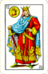

De: La Frikipedia, la enciclopedia extremadamente seria.
De: La Frikipedia, la enciclopedia extremadamente seria. De: La Frikipedia, la enciclopedia extremadamente seria.
| De la serie gobernantes de ayer y de hoy: | |||
| Carlos I de España | |||
| |||
| Nacimiento | 1500 | ||
| Muerte | 1558 | ||
| Cargo | Rey de España
Emperador del Sacro Imperio Romano Germánico | ||
| Ideología | Pre-franquista-Flanderista | ||
| Nacionalidad | España | ||
| Cónyuge | Su inseparable Kalashnikov | ||
| Dinastía | Carlérica | ||
| Notas | He aquí un niño eterno... | ||
Carlos V de España y I de Alemania (¿o era al revés?), hijo de Juana la Cuerda y Felipe el Horrendo, rey de Flandes (que no Flanders) y, más tarde, de España.
Carlitos nació en Bélgica, y desde joven fue, ya de por sí, imbécil. Empezó con la caza (como todos los Carlos reinantes) a eso de los 8 años, siendo los ciervos sirvientes disfrazados de ñus. Todas sus jornadas de caza, hasta su muerte, fueron un verdadero timo, pero la cosa pasó desapercibida (como el salmón del Frasquísimo)...
Con 11 años se registró su primer caso de epilepsia al ver a su perro Damián comerse un Playmobil. Posteriormente, se hizo EMO, se le pasó el drama en 3 días.
Con 16 añicos le hacen rey de España, que intentó conventirla en Espiña nada más sentado en el trono. Su intento de golpe de estado fracasó en 15 minutos, debido a que se trataba de enviar a Toledo unos perros mordiendo Playmóbiles. Los toledanos le cogieron una manía incleíble al Carlitos, y en 1520 se sublevan intentando caparle, naciendo así los comuneros. Carlos V se lía a hostias y un año después consigue Toledo, conviertiéndola en capital del Imperio Español (na' menos).
Luego cuenta la leyenda, que, en 1524 se va a Rusia a por un cargamento de vodka y rifles. Por el camino, más o menos en Alemania, le coronan emperador del Sacro Imperio Romano Germánico (ahí es na') por llevar encima los puntos Carrefour que le dieron una semana antes al ir a por las Tostarrica. El cargo le mola y decide quedarse un rato en las Germanias (las cosas de Rusia se las enviaron por la recién fundada DHL a su residencia de Huelva).
En 1530 coge uno de sus queridos kalashnikov sin estrenar y se va a comer "protestantes al curry" por toda Europa, pero no encuentra ni un solo restaurante que le ofreciese tal exquisito bocata bocado.
Más tarde, en la batalla de Mühlberg, tiene la ocasión cde morderle el brazo a un arcabucero sajón, con lo cual quedó satisfecho para toda su vida. Fue muy criticado en su época el haber montao todo este embrollo para luego esto, pero en fin, cosas de reyes...
Una vez con el sabor eterno de un brazo de protestante en su paladar, dejó colgado al poder en su Imperio y se retiró sin complicación al monasterio de Yuste por deseo de su hijo, donde se dedicó a hacer travesuras. Entre sus principales actividades constaba: poner petardos en el patio, poner chinchetas en las sillas de los compañeros y hacer burla a los profesores. Carlos I murió ahí mismo a azotes por un castigo el profe de música.
Carlos V, como otros gilipipas, también era filósofo. Se pasó la vida haciendo tonterías que el consideraba importantes, pero que en realidad ponían verde desde a su madre, hasta el chambelán de turno. He aquí algunas de sus importantes reflexiones:
|  | Reyes de España | |
|---|---|---|
| Luis I » Fernando VI » Carlos III » Carlos IV » Fernando VII » José I Napoleón » Isabelota II » Amadeo I » Alfonso XII » Alfonso XIII » Magneto I » Felipe VI |
Autor(es):